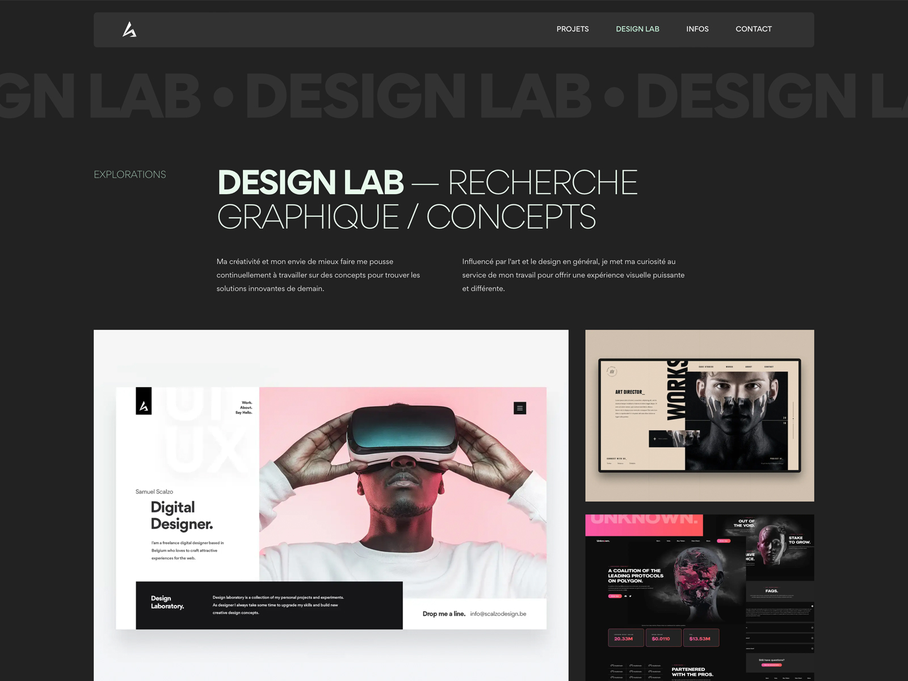
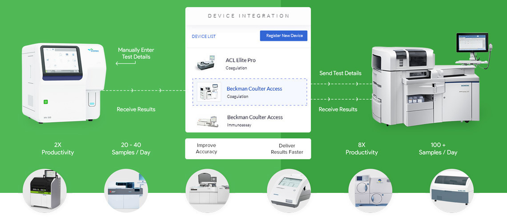

Chapter 01
跨学科研究平台
医学、信息、材料与人文社科协同，形成从基础研究到场景落地的完整链路。


参考榜一页面的“沉浸式专栏”节奏，我们将武汉大学迁移为连续阅读体验：一边滚动，一边看到学术场景、研究设施与真实校园生活如何接力展开。

Chapter 01
医学、信息、材料与人文社科协同，形成从基础研究到场景落地的完整链路。

Chapter 02
从高性能仪器到公共实验平台，支持本科生到博士后的持续探索。
Chapter 03
通过国际联合课程、实验室互访与城市协作计划，让校园研究与真实社会场景形成持续联动。
借鉴 GQ 榜一页面的栏目化排版，保留高信息密度和沉浸视觉节奏。
构建多模态辅助诊疗模型，提升筛查效率与可解释性。
2026 重点推进围绕新材料与能源系统，面向城市与工业场景开展联合攻关。
5 大联合课题以数据方法重构历史叙事、社会观察和公共政策研究。
跨院联合实验室媒体素材按武汉大学主题替换，保持原参考站“图片驱动叙事”的组件逻辑。
如需了解本科、研究生或国际项目，请留下你的研究兴趣方向。